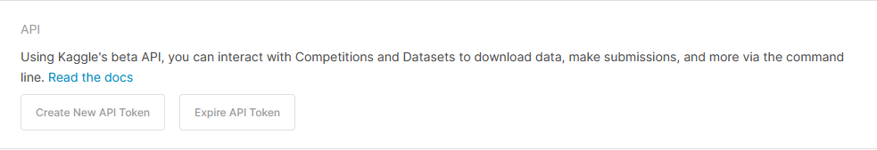

devtools::install_github("ldurazo/kaggler")
library(kaggler)Kaggle, a subsidiary of Google, allows users to find and publish data sets, explore and build models in a web-based data-science environment, work with other data scientists and machine learning engineers, and enter competitions to solve data science challenges.
Kaggle offers plenty of datasets to practice with. Here I show you how to directly import those datasets in R, using Kaggle API and a fork of the unofficial R API package called kaggler. In particular, I’ll explain how to download, unzip and import those Kaggle datasets being bundled in a .zip file. For non zipped files, refer to base kaggler documentation.
Step 1: Create a Kaggle API key
As first step we need to create a kaggle API key. Sign in into your Kaggle account (if you already have one), or create a new account. Then go to account settings, find API section and click on ‘Create new API token’ (see Figure 1 )

When clicking on that button, a file called ‘kaggle.json’ is downloaded. It’s a very simple .json file with your username and API key. You can use those credentials to connect to Kaggle via R.
Step 2: Install kaggler package
Install kaggler package with:
Remember, this is only a fork of the actual kaggler package, and it may be discontinued in the future.
Step 3: Set credentials
You can use kaggler::kgl_auth() function to set your API credentials for the current R session, from the .json file mentioned earlier.
kaggler::kgl_auth(creds_file = "path/to/credentials/json/file")You can also manually set the username and API key with the respective arguments.
kaggler::kgl_auth(username = "your_username", key = "your_API_key")Step 4: Download and unzip datasets
Now we can download our desired Kaggle datasets. We get a list of those datasets with:
kgl.list <- kaggler::kgl_datasets_list()After choosing one dataset (see ‘ref’ column from ‘kgl.list’), we download the archive with kaggler::kgl_datasets_download_all() function, and then we need to unzip it, and read the file contained in it. To accomplish this task, we write a custom function.
kgl_download_custom <- function(owner.dataset, Mode = "wb") {
resp <- kaggler::kgl_datasets_download_all(owner_dataset = owner.dataset)
temp <- tempfile(fileext = ".zip")
download.file(resp[["url"]], temp, mode = "wb")
temp <- unzip(temp, exdir = tempdir())
df <- read.csv(temp, na.strings = c("", NA))
return(df)
}Where ‘owner.dataset’ parameter is the corresponding ‘ref’ value from ‘kgl.list’. For example, let’s say we want to download the ‘electric vehicles’ dataset. We run:
EV <- kgl_download_custom("mohamedalishiha/electric-vehicles")